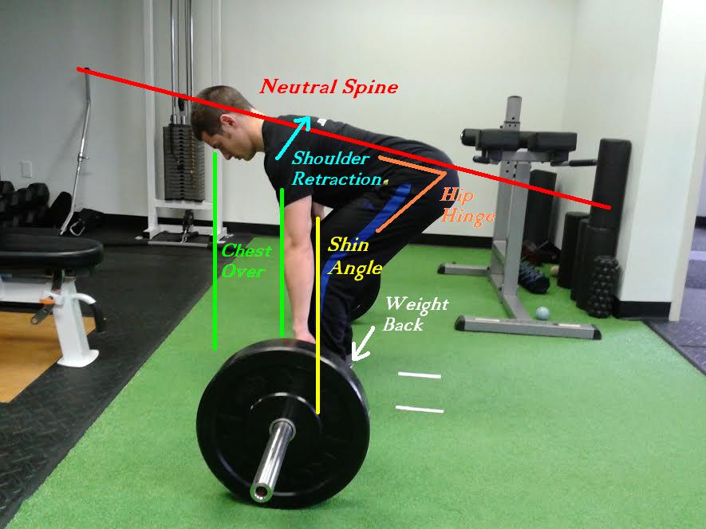

Back Squat
The back squat is a very important exercise when targetting the leg muscless. It is commonly known as being of=ne of the three lifts partaken in the sport of powerlifting. Although the squat is highly recommended throughout the gym industry it is vitally important that the squat is preformed correctly. The first thing to do before starting the squat movement is to find the correct rack height. Select a rack height that requires only a slight extension of the hips and knees (5-10°) to unrack the bar (done through trial and error). If the bar is too high, then un-racking and re-racking may be unsafe and if the bar is set too low, un-racking becomes needlessly inefficient. Place your hands outside shoulder width on the bar, making sure that they are evenly spaced out from the centre of the barbell. This distance will depend on the size and shoulder flexibility of a given individual. Position the feet underneath the bar (midfoot directly below the bar as a general guideline) in a countermovement jump stance. Assume the position with the barbell positioned on the upper trapezius muscle. This is known as the high bar squat placement. Take a deep breath in and un-rack the barbell. Walkout into the squat position and stand up tall. Take another deep breath in and descend into the bottom position, flexing the hips and knees whilst maintaining the bar position over the midfoot. Descend to the point where the greater trochanter of the femur drops below the line of the superior border of the patella. Depending on an individual’s circumstances, this range of motion can be modified. Reverse the motion to return to the start position, leading from the chest and maintaining a neutral spine throughout.
Lunge and Split Squat
The lunge movement can be performed in a forward or backward (commonly known as the reverse lunge) direction. To perform a forward lunge, assume the start position, standing upright with the feet roughly shoulder width apart. Reach forward with one leg and squat down in this “split” stance. Allow the knee of the back leg to gently touch the floor before pushing back into the start position with the lead leg. Repeat this procedure on the opposite leg. To perform a reverse lunge, the start position is the same as the forward lunge, but as the name suggests, the lunging movement occurs in reverse. Reach back with one leg and squat down in the split stance. Return to the start position by pushing through the front leg. The split squat is performed in much the same way as the lunge, except in this variation, you remain in the split stance until all repetitions are completed and then switch to the opposite stance. Lunges and split squats can be performed with a barbell in the same rack position as the back squat, or with dumbbells, kettlebells, sandbags etc. The key difference between the lunge and the split squat if the starting position as shown the the images above.
Barbell Deadlift
The deadlift is a popular exercise used within strength training programs for developing strength and hypertrophy in the posterior musculature. Any athlete competing in a sport that places high demand on the leg muscles could benefit from incorporating the deadlift into their training regime. The deadlift is the final lift in Powerlifting competition, and it is also synonymous with the sport of Strongman. Approach the barbell in a shoulder-width stance (roughly, this will vary person to person), stand so that the bar is directly over your midfoot. To perform the movement, flex at the hips and knees until you can reach the barbell whilst cueing to maintain a relatively neutral spine. Take a double overhand (or pronated) grip on the bar. Stand up with the bar. Your knees, hips and shoulders should be in an extended position at the top of the movement. Reverse the motion to bring the bar back down, initiating from the hips, then flexing at the knees to ensure a vertical bar path.
Leg Extensions
Set up the leg extension machine so the pad is at the top of your lower legs at the ankles. Your knees are at 90 degrees. Select a weight that will give you a moderate load for your desired repetitions.Place your hands on the hand bars. Lift the weight while exhaling until your legs are almost straight. Do not lock your knees. Keep your back against the backrest and do not arch your back. Exhale and lower the weight back to starting position.